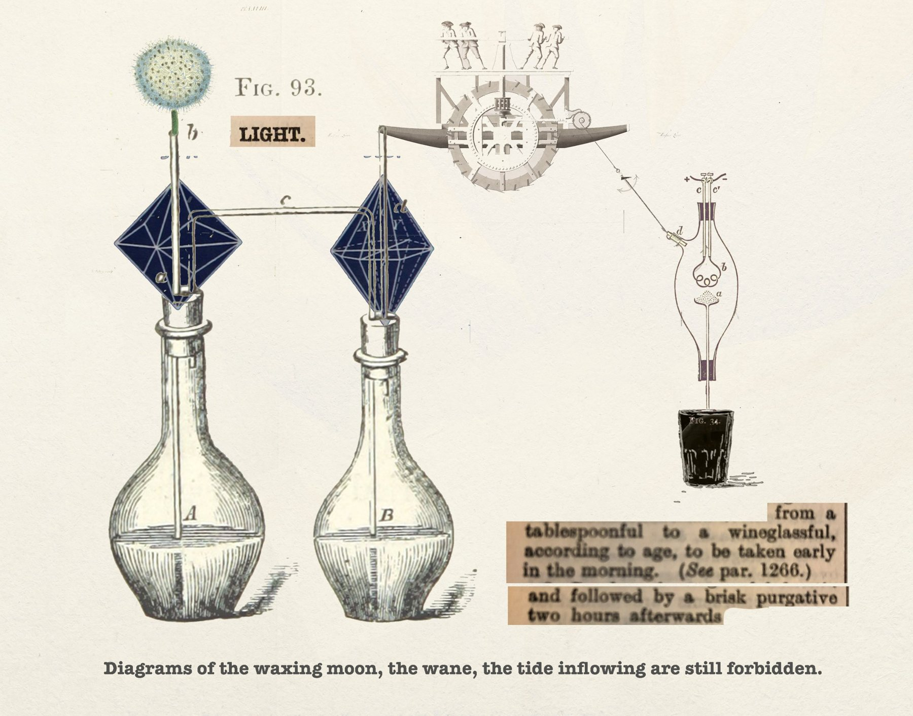
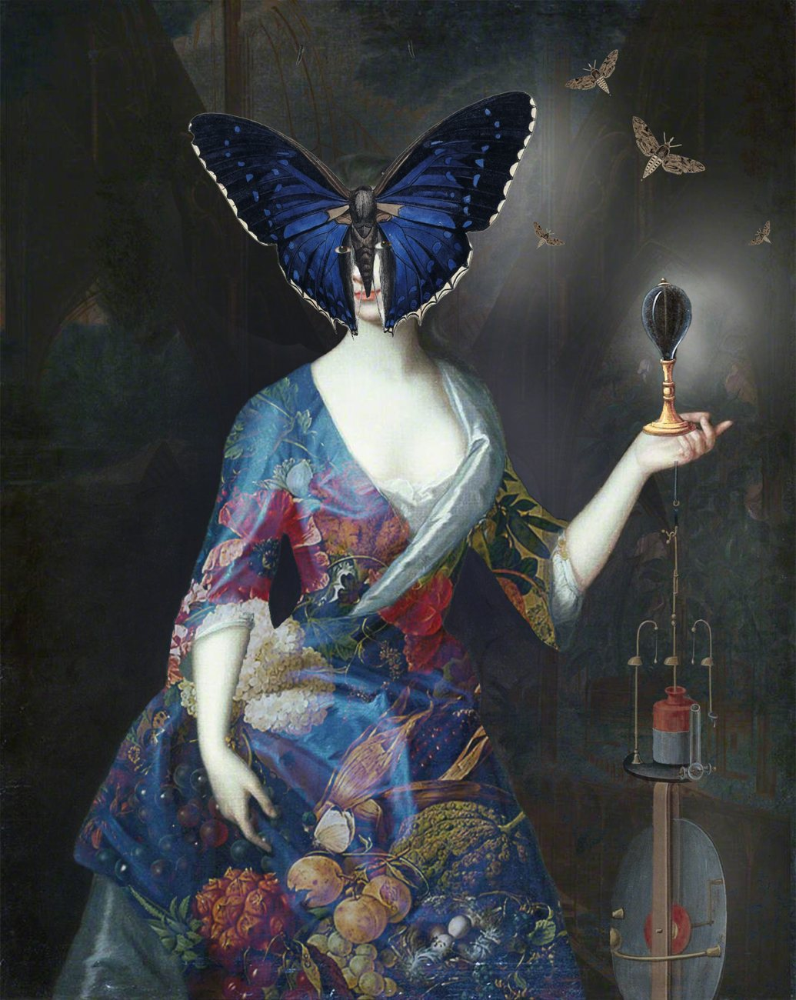

Methods · For internal circulation
Poetic logic as a solution engine
The Ministry does not solve problems by reasoning about them. It deals each problem a creature and a poetic form, and lets the form do the reasoning.

Procedure
- The problem is chosen. The visitor names a small problem: a parking fine, cold tea, a missing teaspoon. Small problems only.
- The creature is dealt. A creature or natural object is issued: a starling, a whale, a fjord, a capybara. It behaves like a magical object in a folk tale, an instrument the solution must use.
- The form is dealt. A poetic form is issued, and its rules become the logic of the solution. The sestina rotates six end-words in the order 6-1-5-2-4-3, so in Report 39 six parking bays, and six civic roles, rotate in that order at dusk.
- The findings are issued. The solution is written as a short consultancy report, illustrated with a collage, and printed as a single broadside.
- The public responds. Visitors may register an objection, including that the solution is perfect. Objectors are referred to the Public Amendments Office.
Standing orders
The stranger the solution, the more reasonable the Ministry must sound.
The Ministry is always the butt of the joke. It never laughs at the person with the problem, only at its own confidence in solving it.

How the reports are made
The reports were generated by AI, then rewritten or edited by me. The images are all my own collages. The site was coded by AI, with my critical and editorial steer throughout.
Small print
- The form is dealt, not chosen. It is a Ministry. It decrees things.
- Each form is a department: the Ministry of Sestina Logic, the Department of Villanelles.
- Facts in each report are checked. Only the solutions are improbable.
- Drafts are typed by a machine and corrected by hand.
- [Your note: where poetic logic comes from, for example Vico or Tarkovsky, once checked.]